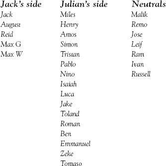

“SO HERE ARE the official sides,” said Summer at lunch the next day. She pulled out a folded piece of loose-leaf paper and opened it. It had three columns of names.

“Where did you get this?” said Auggie, looking over my shoulder as I read the list.
“Charlotte made it,” Summer answered quickly. “She gave it to me last period. She said she thought you should know who was on your side, Jack.”
“Yeah, not many people, that’s for sure,” I said.
“Reid is,” she said. “And the two Maxes.”
“Great. The nerds are on my side.”
“Don’t be mean,” said Summer. “I think Charlotte likes you, by the way.”
“Yeah, I know.”
“Are you going to ask her out?”
“Are you kidding? I can’t, now that everybody’s acting like I have the Plague.”
The second I said it, I realized I shouldn’t have said it. There was this awkward moment of silence. I looked at Auggie.
“It’s okay,” he said. “I knew about that.”
“Sorry, dude,” I said.
“I didn’t know they called it the Plague, though,” he said. “I figured it was more like the Cheese Touch or something.”
“Oh, yeah, like in Diary of a Wimpy Kid.” I nodded.
“The Plague actually sounds cooler,” he joked. “Like someone could catch the ‘black death of ugliness.’” As he said this, he made air quotes.
“I think it’s awful,” said Summer, but Auggie shrugged while taking a big sip from his juice box.
“Anyway, I’m not asking Charlotte out,” I said.
“My mom thinks we’re all too young to be dating anyway,” she answered.
“What if Reid asked you out?” I said. “Would you go?”
I could tell she was surprised. “No!” she said.
“I’m just asking,” I laughed.
She shook her head and smiled. “Why? What do you know?”
“Nothing! I’m just asking!” I said.
“I actually agree with my mom,” she said. “I do think we’re too young to be dating. I mean, I just don’t see what the rush is.”
“Yeah, I agree,” said August. “Which is kind of a shame, you know, what with all those babes who keep throwing themselves at me and stuff?”
He said this in such a funny way that the milk I was drinking came out my nose when I laughed, which made us all totally crack up.